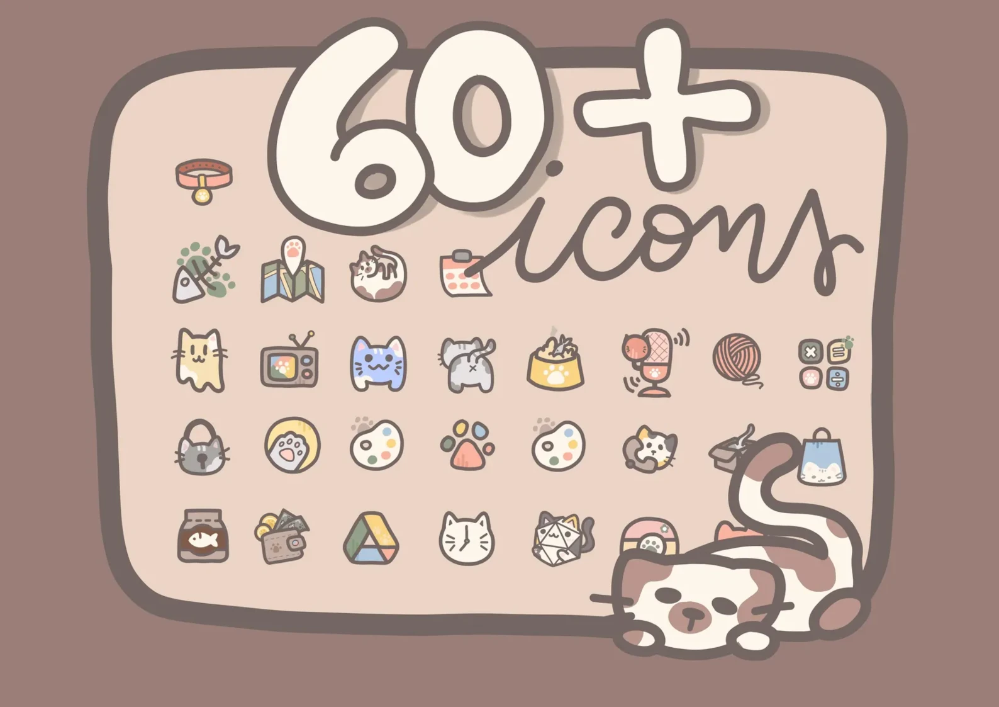
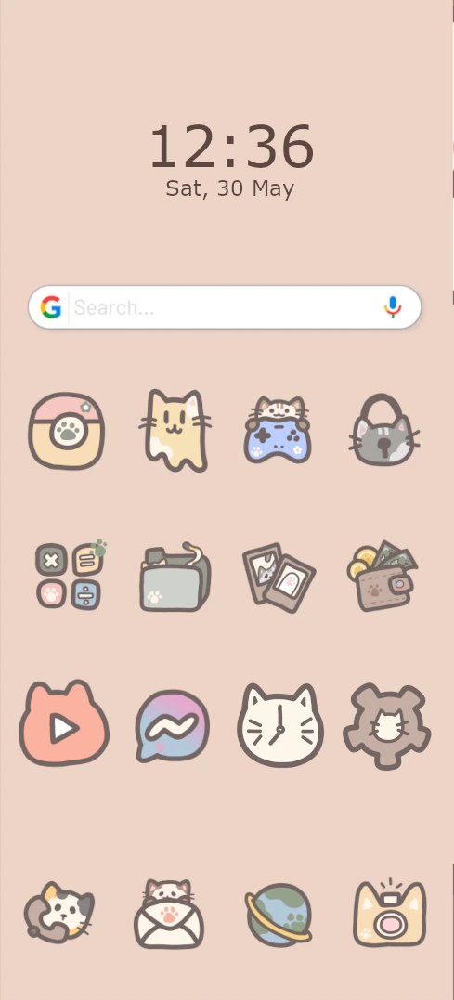

Custom icon creation
Kitty Kitty Icons



RoleIllustration, customisation
ToolsKrita, Photoshop
YearOctober 2024
ClientPersonal project
Custom icon creation


Kitty Kitty is a pack of hand-drawn cat and paw icons for customizing a Samsung phone. I first made it for myself: I wanted a cute phone, but most Samsung theme packs only restyle the main Samsung apps and leave the rest untouched. I wanted my entire app panel to match, so I drew all the icons myself.
I wanted to design a complete, cohesive set, not just a few icons: dozens of small illustrations that look like one family and stay recognizable at phone size. Once it worked well for me, I shared it on Etsy as a digital product for others who want the same.
The idea came from a simple wish: a phone that feels cute and personal. Cats and paws set a playful, cozy mood, and a warm palette of brown and beige keeps every icon coherent across the app panel. Because most theme packs only cover the main Samsung apps, the goal was a set that goes further, so every app, not only the default ones, fits the same look.
I drew every icon by hand in Krita, using a Kamvas 13 drawing tablet. Drawing by hand gives each icon a soft, personal touch that a template or an icon generator couldn’t. Keeping the whole set consistent was the main work: the same style, the same colors and the same level of detail from one icon to the next, so the app panel looks like one coherent design, while each app has its own personality.
The icons are downloaded onto the phone and applied one by one: I manually select each app and change its icon. It takes a bit more time than installing a ready-made theme, but it makes it possible to customize the entire app panel, including the apps that official theme packs ignore. The pack is made for Samsung Android phones, and buyers can swap and reorder the icons to match their own home screen.